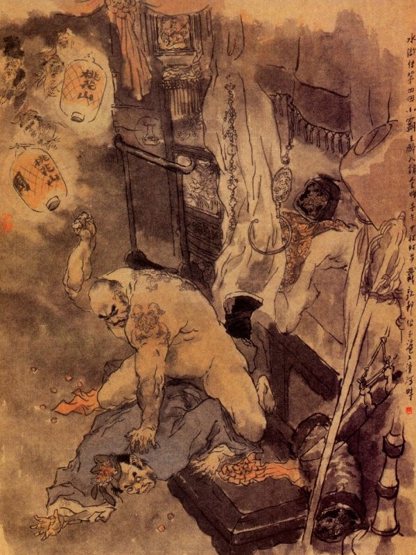
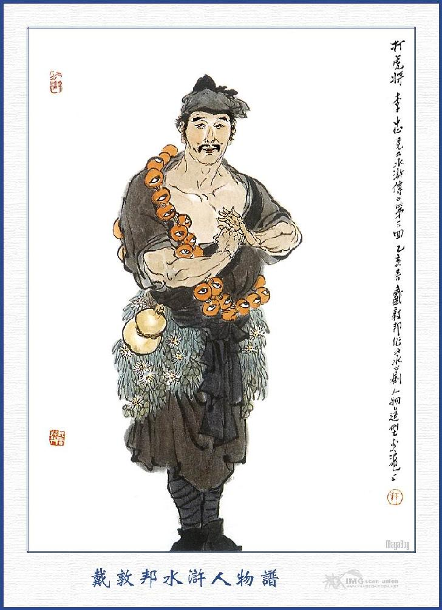
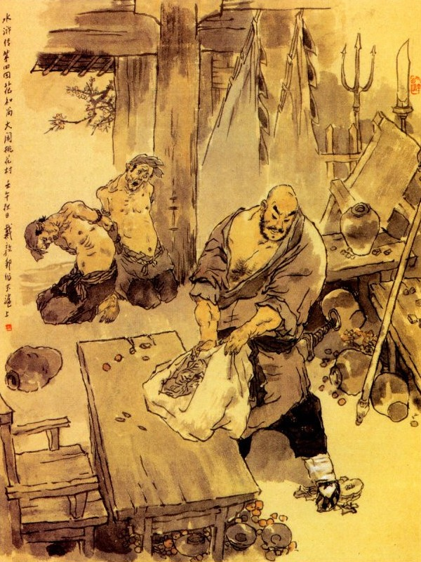

Bấy giờ Trí Thâm đang đứng trước mặt sư cụ mà nói rằng:
- Sư phụ dạy sao cũng xin theo mệnh, nhưng không biết rằng sư phụ cho ở nơi đâu?
Sư cụ nói:
- Ta có một người anh em, gọi là Trí Thanh thiền sư, hiện đương trụ trì ở chùa Đại Tướng Quốc bên Đông Kinh, vậy ta cho ngươi cầm một phong thư này, sang đó rồi ở đấy mà tu hành mới được. Còn bốn câu kệ ta đọc ra đây, ngươi nên nhớ lấy mà suy nghiệm về sau.
Nói xong liền đọc bốn câu kệ rằng:
"Gặp rừng thì dấy,
Thấy núi thì giầu,
Qua non thì mau,
Đến sông thì khá.”
Trí Thâm nghe bốn câu kệ, nhận thuộc lòng tử tế rồi lạy từ tạ sư cụ thu thập khăn gói hành lý và từ giã chúng tăng mà đi xuống núi Ngũ đài.
Bâng khuâng giã cảnh, giã thầy,
Trời cao đất rộng thân này bốn phương
Các sư ở chùa thấy Trí Thâm đi rồi thì ai nấy cũng có vẻ mừng. Cách đấy vài hôm Triệu Viên Ngoại đem tiền nong thợ thuyền đến núi Ngũ Đài để sửa chữa lại mái đình và sửa sang hai pho tượng Kim Cương cho được hoàn nguyên như cũ.
Còn về phần Trí Thâm sau khi đã từ biệt, giã cảnh, giã chùa, liền xăm xăm đi xuống nhà thợ rèn ở dưới chân chùa, để lấy giới đao cùng thiền trượng. Khi thợ rèn đã đánh xong rồi, Trí Thâm mua một cái bao dao để bỏ giới đao vào đó và lại mua sơn để sơn thiền trượng cho cẩn thận, đoạn rồi thưởng tiền cho thợ rèn và khoác khăn gói, vác đao trượng đi sang Đông Kinh. Trong nửa tháng trời Trí Thâm đi đường không hề vào một nhà nào để trọ, chỉ đến bữa ăn thì tìm vào hàng rượu hàng thịt mà chén no say rồi lại một mình thui thủi ra đi. Một khẩu giới đao, một thanh thiền trượng, bốn phương non nước như đón khách tang bồng, cái cảnh nhà sư bây giờ thật là thoả chí, không bó buộc như lúc ở chùa.
Một hôm Trí Thâm đi lững thững trên đường, trông ra bốn bên một mầu nước biếc non xanh rất nên ngoạn mục, bèn vừa đi vừa ngắm một mình mà mặt trời sắp lặn non tây không biết. Bấy giờ mới hoảng hốt đi tìm chỗ trọ, nhưng đường xa quãng vắng, chung quanh lạnh ngắt hơi người, không biết vào đâu cho được, bất đắc dĩ lại phải cố đi để tìm nơi khác. Chàng đi tới hai ba mươi dặm đường, qua một cái cầu rồi đến một nơi trang viện, xung quanh cây cối um tùm mà đằng sau toàn là non núi. Trí Thâm đi đến trước cửa trang viện, thấy những người ở trong đó đang rộn rịp tưng bừng, như là nhà đám, liền vào tận cổng, gọi trang khách ra để hỏi. Vừa khi cất mồm toan hỏi thì đã thấy trang khách nói trước lên rằng:
- Nhà sư đi đâu mà tối tăm lần mò đến đây?
Trí Thâm chống cây trượng xuống đất mà đáp rằng:
- Tôi đi đến đây lỡ độ đường, xin vào ngủ trọ một tối.
- Trong trang tôi có việc, không thể vào trọ được.
- Tôi chỉ trọ một tối rồi sáng mai lại đi, sao mà không được?
- Thôi nhà sư đi tìm chỗ khác, chứ ở đây không trọ được đâu, trọ để mà chết hay sao?
- Nói lạ? Trọ một đêm mà chết cái gì?
Trang khách gắt lên rằng:
- Có đi thì đi đi, không thì trói vào kia bây giờ.
Trí Thâm nghe nói tức mình sấn cổ lên mà mắng rằng:
- Thằng nhà quê này vô lý quá, ta làm gì mà mi bảo trói ta?
Lũ trang khách thấy vậy thì đổ xô đến, đứa thì mắng đứa thì đuổi, đứa thì khuyên bảo nên đi. Bấy giờ Trí Thâm đã cáu tiết, toan giơ thiền trượng để đánh, chợt có ông lão trạc ngoài 60 tuổi, chống một cái gậy rất dài, ở trong nhà đi ra hỏi lũ trang khách rằng:
- Chúng bây làm gì ầm ầm lên thế?
Trang khách đáp rằng:
- Bẩm có lão sư nào toan đến đánh chúng tôi ở đây.
Trí Thâm không đợi dứt lời, liền nói ngay rằng:
- Tôi là sư ở Ngũ Đài Sơn đi sang Đông Kinh có việc, nhân trời tối qua đây ngủ nhờ quý trang một tối, ai ngờ đám người nhà vô lễ, cứ toan những trói với đánh là nghĩa lý làm sao?
Ông lão nghe vậy bèn bảo Trí Thâm rằng:
- Nếu người có phải là ở bên Ngũ Đài Sơn thì xin mời vào trong này.
Nói xong dẫn Trí Thâm vào trong nhà mời ngồi rồi nói rằng:
- Xin sư phụ tha lỗi cho, lũ người nhà chúng nó ngu si, không biết cho nên xấc láo như vậy, chứ chúng tôi đây xưa nay vẫn kính phật thờ trời, có đâu dám thế. Ngày nay dẫu trong nhà tôi đây có việc, song để sư phụ nghỉ chơi một tối cũng chẳng hại gì.
- Chẳng hay quý trang đây là nơi nào?
- Thưa người, tôi đây là người họ Lưu, đây gọi xóm Đào Hoa, cho nên người ta thường gọi tôi là Đào Hoa Trang Lưu Thái Công. Vậy dám hỏi sư phụ pháp hiệu là gì?
- Tôi nguyên người họ Lỗ, sau theo sư cụ Trí Chân tôi ở chùa Ngũ Đài, cho nên người đặt pháp hiệu là Lỗ Trí Thâm.
- Bây giờ đã tối, xin sư phụ ngồi nghỉ rồi xơi cơm, nhưng chẳng hay sư phụ có dùng được đồ mặn hay không?
- Tôi đây bất cứ là chay hay mặn, hễ có rượu thì thịt trâu bò tôi ăn cũng được.
- Nếu vậy thì tôi xin bảo người nhà, dọn rượu sư phụ xơi.
Nói đoạn gọi trang khách lấy rượu thịt và các thứ rau quả cơm nước lên, để thiết đãi nhà sư.
Trí Thâm bỏ tay nải, cổi bao đao ra để một bên rồi gắp thịt ăn uống tự do một lúc, hết sạch cả cơm rượu và một mâm thịt làm cho Lưu Thái Công trông thấy phải kinh sợ.
Được một lát Lưu Thái Công bảo trang khách, dọn một trang phòng ở bên ngoài, để cho Trí Thâm nghỉ mà dặn rằng:
- Sư phụ cứ đi nghỉ nếu đêm nay ở đây có xảy ra huyên náo thì sư phụ cũng mặc đấy mới được.
Lỗ Trí Thâm liền hỏi:
- Vậy thì ở quý trang có việc chi làm vậy?
- Việc đó các ngài đã tu hành thì không nên hỏi đến làm chi?
Trí Thâm lại hỏi:
- Tôi trông Thái Công làm sao mà không được vui vẻ như thế? Chẳng hay vì tôi đến đây phiền nhiễu đến Thái Công thì sáng mai tôi sẽ tính tiền trả lại Thái Công.
- Sư phụ nói làm gì vậy? Nhà tôi đây thiết đãi chư tăng cũng nhiều, có đâu một mình ngài lại không chu tất nổi hay sao? Tôi đây sở dĩ phiền muộn là chỉ vì hôm nay gả chồng cho đứa con gái đó thôi.
Trí Thâm cười mà đáp rằng:
- Lạ chưa? Con trai lớn thì lấy vợ, con gái lớn thì lấy chồng, đó là lẽ thường trong trời đất, can chi mà cụ phải lo?
- Đành vậy, nhưng việc hôn nhân này, có phải là tôi ưng thuận ở đâu?
Trí Thâm lại cười mà nói rằng:
- Ông cụ này mới lạ chứ! Đã không bằng lòng thì sao lại gả chồng cho nó?
- Tôi xin kể nguyên ủy, để sư phụ nghe:
Nguyên tôi chỉ có một đứa con gái, năm nay 19 tuổi, chưa dám gả chồng. Nhân gần đây ở trên núi Đào Hoa Sơn, có hai ông Đại Vương đến đóng trại ở đó, tụ đến năm bảy trăm người để cướp bóc dân gian mà quan quân trị mãi không nổi. Sau có một người biết nhà tôi có đứa con gái, liền đưa sang đây 20 lạng vàng và mấy tấm lụa mà bắt ép phải gả, đã hẹn đến hôm nay là làm lễ thành hôn. Tôi đã định từ chối, song thế mình yếu đuối không làm gì được, đành phải chịu vậy, vì thế cho nên tôi phiền não thế thôi.
Trí Thâm nghe dứt lời liền nói:
- À! Té ra câu chuyện như thế đấy, nếu vậy thì tôi có cách để khuyên giải, cho người ấy hồi tâm hướng đạo được. Cụ ơi! Cụ đừng lo nghĩ thêm phiền!
- Chết nỗi! Khuyên giải chi? Hạng ấy họ ăn thịt người không tanh làm thế nào làm cho họ hồi tâm hướng đạo được?
- Tôi ở Ngũ Đài Sơn, nhờ sư phụ tôi dạy được một phép mầu, dẫu đến sắt đá cũng có thể chuyển được chẳng lo là người. Bây giờ cụ cứ bảo cho cô dâu ẩn đi một chỗ khác, còn trong phòng cứ mặc cho tôi vào đây rồi tôi sẽ có cách khuyên giải người kia.
Lưu Thái Công hơi có vẻ mừng mà rằng:
- Nếu vậy thì hay lắm! Nhưng chỉ sợ chạm phải râu hùm thì hơi nguy hiểm mà thôi.
- Không hề chi! Cụ cứ để mặc tôi, tôi sẽ xử được.
Bây giờ trang khách đứng đấy, đều lấy làm kinh lạ. Đoạn rồi Lưu Thái Công lại nói với Trí Thâm rằng:
- Nếu vậy thì nhà tôi thực có phúc, mới gặp được đức Phật giáng thế mà cứu độ cho; Nhưng chẳng hay sư phụ có xơi cơm nữa hay không?
- Cơm thì không cần nữa, nhưng có rượu cho tôi một ít cũng hay.
Lưu Thái Công vâng dạ luôn mồm rồi sai trang khách lấy một con thịt quay và một bình rượu lớn lên cho Trí Thâm uống. Trí Thâm ngồi uống hai ba mươi bình rượu, lại ăn hết cả con vịt quay rồi đứng dậy hỏi Thái Công rằng:
- Cụ đã cho cô con gái đi trốn chưa?
- Bẩm đã.
- Nếu vậy thì cụ cho dẫn tôi vào phòng đợi tân lang đến. Nói đoạn sai người nhà vác khăn gói và tự cầm đao trượng đi theo Thái Công vào trong phòng. Khi tới nơi Lỗ Trí Thâm bảo cho Thái Công trở ra; để một mình ở trong phòng, đoạn rồi đem các bàn ghế về một bên để đao với trượng lên giường rồi cổi quần áo nhảy lên giường để ngồi chồm chổm ở đó.
Ngoài kia Lưu Thái Công, vừa mới bày biện bàn tiệc xong thì đã xa trong thấy đèn đuốc sáng trưng, người ngựa tấp nập, ở đằng xa kéo đến, liền mãi mãi mốt mốt chạy ra cổng để đón. Khi toán ấy gần tới nơi thì thấy cờ quạt phất phới, sáng choang, một lũ tiểu lâu la đầu đội khăn đỏ lưng thắt dây đỏ, cầm hai hàng đèn lồng đi trước rồi đến vị Đại Vương cưỡi con ngựa trắng lông quăn đi giữa. Lưu Thái Công thấy Đại Vương xuống ngựa thì vội vàng quỳ ngay xuống đất rồi rót rượu để dâng. Đại Vương thấy vậy chạy đến nắm tay Thái Công dắt dậy mà rằng:
- Bây giờ cụ là nhạc phụ tôi, sao lại quỳ như thế?
Lưu Thái Công nói:
- Thưa ngài tôi là thuộc hạ của ngài, có đâu dám vô lễ được?
Bấy giờ Đại Vương hơi có dáng say, liền bảo Thái Công rằng:
- Cụ được người con rể như tôi, tưởng không còn gì hơn nữa?
Nói xong uống luôn ba chén rượu rồi đi thẳng vào trong nhà ngồi nghỉ và gọi lũ lâu la đến trước thềm, để hòa nhạc khua trống làm vui. Đại Vương hỏi Lưu Thái Công rằng:
- Dám thưa trượng nhân, phu nhân nhà tôi đâu?
- Thưa ngài, cháu nó còn thẹn, chưa dám ra đây nghinh tiếp.
Đại Vương cười nói rằng:
- Đem rượu đây, để ta mời trượng nhân đã.
Nói đoạn tay cầm chén rượu đưa mời Thái Công mà nói:
- Xin phép trượng nhân, để tôi vào chào phu nhân rồi sẽ ra đây uống rượu.
Bấy giờ trong bụng Thái Công đương chăm chăm mong cho Đại Vương đến mau, để nhà sư khuyên giải hộ, liền tay cầm lấy cây nến rồi đưa Đại Vương đi qua bức bình phong, thẳng tới phòng cô dâu mới. Khi tới nơi Thái Công trỏ lối cho Đại Vương vào trong phòng rồi cầm cây nến chạy ngoắt ra ngoài để trốn, chưa biết hay, dở, dữ lành ra sao? Đại Vương đẩy cửa phòng đi vào thì thấy tối mịt như bưng không có đèn đuốc chi cả, liền nói:
- Quái lạ! Sao ông cụ lại không cho thắp đèn đóm mà để cho phu nhân ta phải ngồi chỗ tối tăm như vậy? Ngày mai ta bảo lâu la mang sang một thùng dầu để thắp mới được.
Khi ấy Lỗ Trí Thâm ngồi yên ở trong màn, nghe nói thì cố bấm bụng nhịn cười mà không dám nói. Đại Vương sờ lần tới màn rồi hỏi:
- Phu nhân ở đâu, sao không ra đón tiếp ta? Có việc gì mà thẹn, ngày mai đã là một bà phu nhân áp trại rồi.
Đại Vương vừa nói vừa giơ tay vén màn lên rồi lần mò sờ soạng vào trong giường. Vừa hay cái tay vô tình kia, sờ ngay vào bụng Trí Thâm, Trí Thâm liền nắm lấy khăn và đai mà giật ngã xuống bên giường, đánh cho một đấm mà mắng rằng:

- Quân ăn cướp này! Nói xong lại đấm luôn cho mấy đấm nữa vào giữa mang tai, Đại Vương kinh hoảng mà kêu lên rằng:
- Sao lại đánh ông như thế?
Trí Thâm cũng đáp lại rằng:
- Bà làm cho biết tay bà đấy.
Đoạn rồi vật ngã Đại Vương ra bên giường, đánh đã luôn mấy cái nữa làm cho Đại Vương phải gào to lên, kêu người cầu cứu! Lưu Thái Công ở ngoài nghe thấy vậy thì rụng rời sợ hãi, không hiểu nhà sư giảng thuyết ra sao mà lại có tiếng người kêu cứu như vậy liền hất hơ hớt hãi đưa đám lâu la cầm đèn đuốc vào xem. Khi vào tới nơi thấy một ông sư phệ bụng cổi trần truồng, đương cưỡi trên bụng Đại Vương thì ai nấy kinh sợ tức giận mà thét nhau vào cứu Đại Vương. Trí Thâm thấy bọn lâu la đều vác gậy vác giáo xông vào thì bỏ Đại Vương đấy mà vớ lấy thiền trượng bổ ra để đánh. Lũ lâu la thấy thế lực nhà sư hung tợn như thế thì đổ xô nhau chạy không anh nào dám sấn vào nữa. Đại Vương thừa thế được chạy thoát ra ngoài, liền vội vàng ra cổng bẻ một cành liễu, nhảy tót lên mình ngựa toan chạy, ngờ đâu khi đã bước lên mình ngựa, đánh lấy đánh để mấy chục roi mà ngựa cứ quanh co không chạy được, Đại Vương lấy làm kinh sợ chắc rằng:
- Vận mệnh đến nơi, cho nên ngựa cũng khinh người mà mà không chạy nữa!
Than ôi!
Ví không vướng chút nợ tình
Thời chi đến nỗi dẫn mình chông gai?
Sau Đại Vương xem rõ mới biết là tại cái dây buộc ngựa vẫn chưa cởi ra, cho nên người ngựa không sao chạy được. Đại Vương thấy vậy, mãi mốt bứt đứt cả dây ra mà quất roi cho ngựa chạy tế về sơn trại. Khi đi đường, trong bụng vẫn oán thầm Lưu Thái Công là người phản trắc, nhất định có phen báo lại mới nghe.
Về phần Lưu Thái Công thấy Đại Vương đi rồi, liền bảo Lỗ Trí Thâm rằng:
- Sư phụ làm như thế thì khổ cho nhà tôi lắm!
Trí Thâm cười mà nói rằng:
- Xin cụ tha lỗi cho tôi, để tôi mặc quần rồi xin thưa chuyện.
Thái Công để Lỗ Trí Thâm mặc quần áo xong rồi, kéo đi ra ngoài mà bảo rằng:
- Trước tôi vẫn tưởng rằng: Sư phụ khuyên bảo thế nào, ai ngờ sư phụ lại đánh hắn như thế, tất nhiên hắn về sơn trại mang thêm quân ngựa đến đây, giết hết nhà tôi mất.
Trí Thâm ung dung đáp:
- Cụ ơi! Cụ chớ có ngại, tôi đây chính là Lỗ Đề Hạt ở dinh quan Kinh Lược đất Vị Châu, vì đánh chết người mới phải xuất gia đầu Phật đây. Lũ nó dẫu có tới một hai nghìn binh mã tới đây, tôi cũng không coi vào đâu cả, nếu không tin thì xin nhắc thử cây thiền trượng kia sẽ biết. Lũ trang khách nghe nói, anh nào anh ấy cũng chạy lại nhắc thử cây trượng xem sao, nhưng không ai nhắc nổi, đến lúc Trí Thâm cầm lên tay thì nhẹ nhõm tựa hồ một cây bấc vậy. Thái Công thấy thế, lấy làm mừng rỡ mà nói rằng:
- Nếu thế thì sư phụ hãy ở đây cứu giúp tôi mới được.
- Cái đó chắc hẳn rồi, khi nào dám bỏ cụ mà đi ngay.
Lưu Thái Công hớn hở vui cười mà rằng:
- Bây giờ tôi xin bảo lấy rượu để sư phụ xơi, nhưng ngài chớ uống say quá chén mà nguy mất.
Trí Thâm nói:
- Cụ không biết tính tôi, tôi uống một phần rượu thì khỏe một phần, chứ uống mười phần rượu lại khỏe thêm lên mười phần, có say bao giờ mà sợ.
- Thế thì còn gì hơn nữa, nhà tôi đây còn rượu thịt, xin sư phụ cứ xơi cho.
Lưu Thái Công nói xong, liền sai người dọn thêm rượu thịt ra, để Trí Thâm đánh chén.
Bên kia Đại Vương phóng ngựa chạy về đến sơn trại, trông thấy Đại Đầu Lĩnh, liền xuống ngựa mà kêu lên rằng:
- Đại Ca ơi! Đại Ca có cứu tôi không?
Người Đầu Lĩnh trông ra thấy Đại Vương, đầu không khăn, lưng không giải, bơ phờ hoảng hốt như người mất vía liền hỏi:
- Làm sao mà như thế?
Anh kia đem đầu đuôi thuật lại cho nghe rồi bảo với Đại Đầu Lĩnh rằng:
- Anh phải nghĩ cách làm sao mà cứu cho tôi mới được.
Đại Đầu Lĩnh nghe nói nổi giận mà rằng:
- Nếu vậy anh em cứ nghỉ ở nhà, để tôi đi bắt thằng ấy đến đây mới được.
Nói xong quay ra gọi lâu la, đóng ngựa sắp thương để đi, Đại Đầu Lĩnh nhảy lên mình ngựa, tay cầm ngọn thương thét lâu la trong trại, phải nhất tề đi xuống trang viện, uy thế ầm ầm như bể sôi núi chuyển, ai cũng phải kinh. Bấy giờ Lỗ Trí Thâm đương ngồi đánh chén một mình, bỗng thấy trang khách vào báo rằng:
- Đại Đầu Lĩnh ở núi Hoa Đào hiện đã dẫn các lâu la đến kia.
Trí Thâm nghe báo thì bảo với trang khách rằng:
- Các ngươi cứ im lặng để ta đánh ngã được đứa nào thì các ngươi trói lại để giải quan lấy tiền thưởng. Các ngươi mang giới đao đây cho ta. Nói đoạn đứng dậy chống thiền trượng cắp giới đao ra đi, khi gần tới cổng đã thấy đóm đuốc sáng trưng, một tên Đại Đầu Lĩnh cưỡi ngựa cầm thương ở ngoài quát rằng:
- Đứa nào giỏi nấp ở trong ấy, ra đây quyết trận với ta xem sao?
Trí Thâm cũng hầm hầm giận dữ quát lên rằng:
- Bay chửa biết ta sao? Để ta đánh cho một trận mà xem.
Đoạn rồi múa thiền trượng xông ra toan đánh. Bỗng Đại Đầu Lĩnh bên kia dừng thương lại mà bảo rằng:
- Hòa thượng hãy khoan tay, nói tên họ cho tôi biết, tôi nghe thấy tiếng hòa thượng quen lắm.
- Ta đây chính là Đề Hạt Lỗ Đạt ở dinh quan Kinh Lược ngày trước đây.
Người kia nghe nói liền cười to lên mà rằng:
- Tưởng là ai té ra Lỗ Đại Ca đó.
Nói xong xuống ngựa vất thương ra rồi chấp tay lạy chào mà hỏi rằng:
- Chẳng hay lâu nay đại các có khỏe không? Ai ngờ nhị đệ nhà tôi lại chạm phải tay ngài, thực là nực cười quá.
Trí Thâm nghe nói vẫn còn ngờ ngợ chưa tin, liền đứng lui vào mấy bước rồi nhìn kỹ ra mới biết là tên Đả Hổ Tướng Lý Trung, gặp ở Vị Châu khi trước. Lý Trung chào Lỗ Trí Thâm xong rồi, liền đến gần mà hỏi rằng:
- Sao quan bác lại xuất gia ăn mặc như thế? Làm cho tôi khó lòng mà nhận được.
Trí Thâm đáp rằng:
- Chuyện tôi còn dài, hãy vào trong này ngồi chơi rồi tôi sẽ nói.
Nói xong dắt tay Lý Trung vào nhà.

LÝ TRUNG
Bấy giờ Lưu Thái Công thấy Lỗ Trí Thâm lại cùng vào một bọn như thế thì trong lòng rất là sợ hãi, không dám thò mặt ra để ứng tiếp. Trí Thâm đưa Lý Trung vào nhà mời ngồi và gọi Thái Công ra để nói chuyện. Thái Công sợ hãi lúng túng không dám bước ra, Trí Thâm liền nói:
- Chúng tôi cũng là anh em cả, xin cụ cứ ra chơi, đừng ngại.
Thái Công thấy nói là anh em thì lại càng sợ hãi, nhưng không ra tiếp đãi thì không được, đành phải rón rén bước ra mà ngồi hầu tiếp chuyện. Lỗ Trí Thâm ngồi ung dung đem chuyện mình từ khi từ giã Lý Trung, cho tới cái mục đích ngày nay, kể cho hai người nghe rồi lại hỏi Lý Trung rằng:
- Chẳng hay anh chàng đã gặp tôi lúc nãy là ai mà sao anh lại ở đây với hắn?
Lý Trung nói:
- Từ ngày tiểu đệ từ biệt Ca Ca ở tửu điếm Vị Châu rồi lại cùng Sử Tiến chia tay mỗi người một nơi; Sau nghe tin Đại Ca đánh chết Trịnh Đồ, tiểu đệ muốn tìm Sử Tiến để bàn kế cứu nhau, song không biết hắn đâu mà tìm được nữa. Kế đến lúc nghe tin quan quân truy nã lạ thường, đệ lại bỏ Vị Châu đi nơi khác. Khi tới qua núi Đào Hoa đây, bị Tiểu Bá Vương Chu Thông, chính là anh chàng lúc nãy, đem người xuống đón đường đánh cướp, đệ liền ra oai đánh cho hắn ta thua một trận; Hắn thấy vậy bèn mời đệ lên sơn trại mà nhường quyền coi giữ quân lương, bởi thế mà tiểu đệ mới làm chủ trại ở đó.
Trí Thâm cười mà bảo rằng:
- Nếu có phải là anh em ta ở đấy thì cái việc hôn nhân đây tất phải thôi đi. Ông cụ đây chỉ có một người con gái để dưỡng lão về sau, nếu ta ép uổng lứa đôi thì thân già ấy còn trông cậy vào đâu được?
Lưu Thái Công nghe nói cả mừng, liền sai dọn rượu thiết đãi hai người và thưởng cho bọn lâu la ăn uống. Khi ăn uống xong Thái Công mang số tiền ra, để gửi nộp Chu Thông, Trí Thâm bảo với Lý Trung rằng:
- Số tiền bác hãy nhận lấy mà mang về, còn việc hôn nhân là ở tay bác đấy.
Lý Trung nhận món tiền rồi nói:
- Vâng việc ấy không ngại gì, bây giờ hãy đón Đại Ca lên chơi qua trại tôi và Lưu Thái Công cũng nên lên chơi một thể.
Thái Công vâng lời, sai người mang đao trượng và hành lý cho Lỗ Trí Thâm rồi hai người đi hai cỗ kiệu mà theo Lý Trung lên núi. Bấy giờ trời mới sáng thì ba người đã cùng đến sơn trại, Lý Trung xuống ngựa đón Trí Thâm và Thái Công vào chơi trong dinh rồi gọi Chu Thông lên nói chuyện. Chu Thông chạy đến trông thấy nhà sư ở đấy thì cả giận mà bảo Lý Trung rằng:
- Sao bác không báo thù cho tôi mà lại mời người ta đến đó?
Lý Trung cười mà hỏi rằng:
- Chú không biết vị hòa thượng này hay sao?
- Nếu tôi có biết thì không đến nỗi bị đánh.
- Thôi, phàn nàn làm chi. Vị hòa thượng này tức là người đánh ba cẳng tay chết anh Trần Quan Tây Trịnh Đồ mà tôi vẫn nói với chú đấy.
Chu Thông nghe nói xoa đầu xoa óc thở dài một tiếng, chấp tay cúi chào Trí Thâm. Trí Thâm cũng đáp lễ lại rồi nói rằng:
- Tôi trót lỡ xin ngài thứ tội cho.
Bấy giờ ba bốn người cùng ngồi rồi Lỗ Trí Thâm bảo với Chu Thông rằng:
- Bác Chu ơi! Việc hôn nhân ở nhà Lưu Thái Công, không nên ép nữa, vì ông ta chỉ có một người con gái dưỡng lão mà nếu mình ức hiếp lấy ngay thì thực là bất tiện, vậy bất nhược ta lấy lại tiền mà tìm đám khác thì hơn, bác nghĩ sao?
Chu Thông nói:
- Ngài đã dạy thế thì tôi xin vâng lời, không dám nghĩ đến nữa.
Trí Thâm nói:
- Đại trượng phu ở đời, đã làm việc gì không nên nói đi nói lại, thế mới hay.
Chu Thông liền bẻ mũi tên để thề, đoạn rồi Lưu Thái Công nộp lại số tiền cưới mà bái tạ ra về. Lý Trung, Chu Thông sai giết trâu dê làm tiệc rồi đưa Trí Thâm đi xem phong cảnh trong trại. Non cao cây rậm, hình thế cheo leo, bốn chung quanh toàn là hiểm tuấn, Trí Thâm xem xong lấy làm khen ngợi vô cùng. Được năm ba hôm, Lỗ Trí Thâm xem chừng bọn Lý Trung cũng không phải là người khẳng khái mà tính khí nhiều điều biển lận khó chịu, liền từ giã xin đi. Lý Trung, Chu Thông lưu lại không được liền nói:
- Nếu quan bác không chịu ở đây thì xin cố lưu đến mai, để chúng tôi đi xoay xem có được chút gì sẽ đưa lại lộ phí.
Sáng hôm sau Lý Trung, Chu Thông đặt rượu tiễn hành, đem các đồ chén ngọc đĩa vàng ra để bày tiệc. Đương khi chén tạc chén thù thì bỗng có lâu la vào báo:
- Có mấy mươi người đương áp hộ hai cổ xe, đương đi dưới chân núi.
Hai người nghe báo, vội vàng cắt một tên lâu la ở lại để hầu Lỗ Trí Thâm và nói rằng:
- Xin quan bác hãy cứ ngồi uống rượu, để cho chúng tôi đi xuống núi tảo ít lộ phí, để tặng quan bác đã.
Nói xong hò lũ lâu la cùng đi, Lỗ Trí Thâm thấy hai người đi rồi thì tự nghĩ rằng:
- Hai thằng này láo thực, chúng nó có biết bao nhiêu đồ ngọc ở đây, thế mà còn phải đợi kiếm được của đâu rồi mới tặng mình, thành ra của thế gian đãi người ngoan thiên hạ, chẳng qua chỉ khổ sở kẻ khác mà thôi. Vậy bất nhược tiện đây, ta hãy làm cho nó một mẻ xem sao?
Nghĩ đoạn gọi tên lâu la đứng hầu, đến gần trước mặt mà đánh cho một cái ngã lăn queo xuống rồi lấy giẻ nhét vào mồm mà trói lại để đó. Đoạn rồi mở khăn gói hành lý ra, bọc các đồ vàng đồ bạc vào gói, đeo thẳng lên vai rồi lấy đao lấy trượng lẻn ra đi trốn. Khi ra đến sau trại trông thấy thế núi tuy hiểm hóc, nhưng cũng có thể mà nhảy ra được, Trí Thâm liền tháo khăn gói và đao trượng mà vất xuống trước rồi cất mình nhảy một cái thật mạnh xuống sau. Nhờ được bãi cỏ ở chân núi cho nên Trí Thâm nhảy xuống không bị đau đớn chi cả, chàng liền mãi mốt lại khoác khăn gói cầm đao trượng mà cút đi cho chóng.

Bấy giờ Lý Trung, Chu Thông dẫn lâu la, xuống đến chân núi thì vừa gặp bọn người áp tải đi đến, anh nào cũng có khí giới trong tay, hai chàng liền múa thương xông tới, bọn kia cũng giơ khí giới lên đỡ rồi cùng Lý Trung đánh nhau có tới mười mấy hiệp không chịu thua. Chu Thông thấy vậy sốt ruột, thét bọn lâu la hò reo ầm lên rồi kéo sang để đánh. Bên kia biết thế không địch nổi, bèn bỏ các đồ đạc xe cộ mà chạy tháo lấy thân, song cũng mất đến 7, 8 người thiệt mạng. Lý Trung, Chu Thông đắc thắng cả mừng, sai các lâu la khuân đem đồ đạc về trại. Hay đâu về đến trại thì chỉ thấy tên lâu la bị trói nằm cò quăm ở đất, trông trên bàn thì chén ngọc đĩa vàng đều biến đi đâu mất hết mà Lỗ Trí Thâm cũng chẳng thấy đâu; Hai người đều lấy làm kinh ngạc, cổi trói cho tên lâu la mà hỏi hết đầu đuôi. Sau biết rõ Trí Thâm đã thâu các đồ bảo vật mà nhảy đi lối sau trốn đi mất rồi thì Chu Thông lấy làm căm tức mà bảo với Lý Trung rằng:
- Sơn trại của ta kín đáo như thế mà lão ta còn nhảy ra được thì gớm thật, bây giờ ta biết làm sao?
Lý Trung nói:
- Chúng ta phải đi đuổi hắn mà làm cho hắn xấu hổ một phen mới được.
- Thôi không ăn thua, mình đuổi thế nào được nó mà nếu có đuổi được nó, nhưng nó không trả thì làm sao? Như thế có phải sinh câu chuyện lôi thôi mà khổ đến mình, vậy bất nhược đề cho hắn, dễ làm một chút về sau mà lại hóa hay.
Nói xong đem các đồ vật cướp được, chia ra làm ba phần, Lý Trung, Chu Thông mỗi người một phần, còn một phần thì chia thưởng cho các lâu la. Lý Trung từ chối rằng:
- Vì tôi dắt lão sư lên đây, để đến nỗi thiệt hại mất nhiều thì cái phần này của tôi, tôi xin nhường bác cả.
Chu Thông nói:
- Tôi với bác đã thề với nhau rằng, cùng sống cùng chết, có khi nào tôi lại nhận phần như thế?
Nói xong chia làm ba phần tử tế mà cùng nhận bằng nhau.
Mới hay:
Đã thề cốt nhục tử sinh.
Tấm xương tuy trắng chút tình dám sai;
Thế gian mấy mặt làng chơi,
Xưa nay trọng nghĩa khinh tài được bao?
Hỏi ai chung đỉnh ra vào,
Trông gương thiên cổ nghĩ sao bây giờ?
Lời bàn của Thánh Thán
Trí Thâm nhận thư của Trí Chân Trưởng Lão, nếu cứ đi đường một tháng, sớm tới chùa Đại Tướng Quốc ở Đông Kinh thì ở luôn trong chùa làm một ông hòa thượng, còn chỗ nào thấy cái tài rồng hổ nhảy và nằm? Câu chuyện có gì làm thú; Hồi này chép xảy chuyện giữa đường, vì sự vào ngủ trọ, chợt vào buồng của tân hôn, không thành một ông thầy chùa nữa, nếu không chuyện vào buồng của một cô dâu thì tác giả tả làm sao ra tài rồng hổ nhảy và nằm, có đâu những chuyện lý thú? Hỡi ôi! Thi Nại Am một bậc người tài tử chân chính vậy. Trong lòng chân chính tài tử kia, há phải thường tình mà dòm thấy được đâu? Mà hồi này gặp Lý Trung, hồi sau gặp Sử Tiến, đều dùng một lối bút pháp, chia ra chương pháp hai thiên, khiến độc giả thấy hai lối sự tình, hai phần cục diện, bút lực đến thế, không thể nào nói ra cho hết. Làm một cô gái là một sự đùa, đã làm đùa hòa thượng tự Ngũ Đài Sơn mà dẫn tới đây, khi đã thành hòa thượng xuống núi, lại làm một cô gái, lại từng phen đóng vai đùa chơi, hỡi ôi! Con gái chẳng phải con gái, Lỗ Đạt không ngờ; đùa với chẳng đùa, Lỗ Đạt đâu ngờ trước được? Hòa thượng chẳng ra hòa thượng, Lỗ Đạt cũng không ngờ, cho đến lên non với xuống non, Lỗ Đạt đều không biết nữa? Chỉ biết rằng: Gặp rượu thì uống, thấy việc thì làm, gặp yếu thì bênh, gặp mạnh (dữ) thì đả, như thế mà thôi, chứ có biết đâu bỗng nhiên làm hòa thượng, bỗng nhiên làm cô dâu, ngày trước bỡn mà lên núi, ngày nay xuống núi cũng bỡn mà ra.
Lỗ Đạt với Võ Tòng hai chuyện, trong ý tác giả, viết cách nhau để đối với nhau, cho nên chép chuyện cũng nhiều chỗ giống nhau mục đích, như Lỗ Đạt cứu nhiều cô gái, Võ Tòng giết nhiều cô gái? Lỗ Đạt say rượu phá Kim Cương, Võ Tòng say rượu đánh mãnh hổ; Lỗ Đạt đánh chết Trấn Quan Tây, Võ Tòng đánh chết Tây Môn Khánh; Lỗ Đạt ở chùa Ngõa Quan thử thiền trượng, Võ Tòng ở núi Ngô Công thử giới đao; Lỗ Đạt đánh Chu Thông, vừa say vừa có bổn phận, Võ Tòng đả Tưởng Môn Thần cũng vừa say vừa có bổn phận; Lỗ Đạt lên núi Đào Hoa, lấy lén tửu khí, nhảy xuống núi đi, Võ Tòng lên lầu Uyên Ương, lấy lén tửu khí nhảy xuống thành đi. đều một mục đích mà làm ra độc giả chẳng phải chẳng biết. Còn có chi tiêu, phải lấy lén đồ dùng, cần phải trốn đi, phải nhảy liều xuống núi, người đời cho rằng: Đường đường một đấng trượng phu, sao đến nỗi lấy lén của dùng nhảy xuống núi trốn? Xét ra một xử sự này thì đường đường trượng phu, có ngại gì lấy lén của dùng và nhảy xuống núi trốn, càng thấy Lỗ Đạt đạt lý khác thường, xem một hồi này, thấy Lỗ Đạt làm hòa thượng, nên rằng từng chỗ nhận ra, như ngồi ở trong trướng cô dâu và nhảy xuống bãi cỏ ở núi, sáng suốt nhận ra làm một người như thế, thực là kỳ diệu không thể nói hết được ra. Lỗ Đạt lấy lén tửu khí rồi trốn luôn đi, tiếp tả luôn những lời của hai người Lý, Chu chia của, đại nhân với tiểu nhân thế nào, dù đàn bà con trẻ xem tới cũng thấy rõ ra, tác giả tả ra thấy hết thần diệu. Ở đời đại nhân làm việc đại nhân, tự biết rằng thiên hạ đời sau xét tới; tiểu nhân làm việc tiểu nhân, chỉ cần tự trong mồm khôn khéo nói ra, dù chơi với đồng bói cũng thò tay mặt đặt tay trái, để giữ lấy phần, xem ở việc Lỗ Đạt lấy lén của và Lý, Chu chia của, chẳng thấy thú ư?